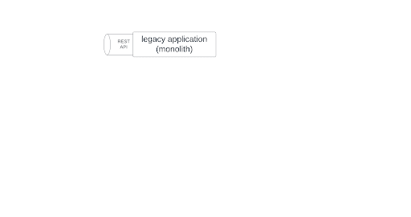
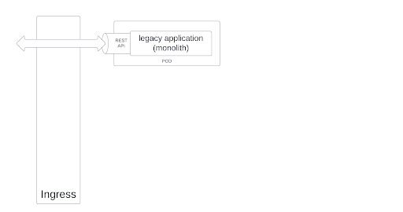
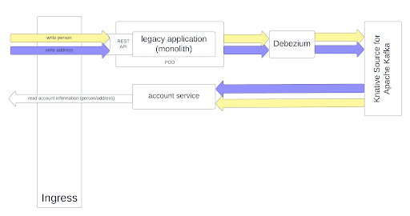
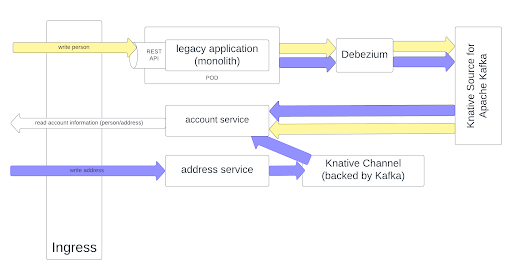
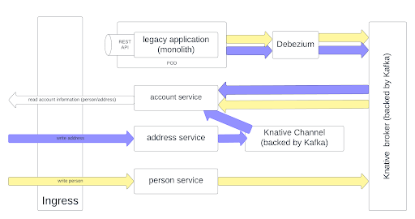
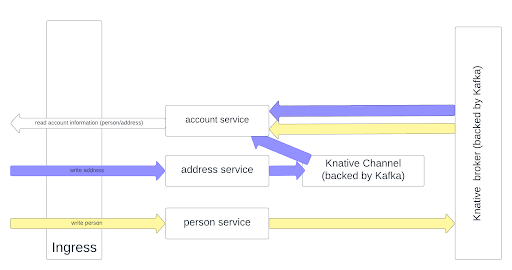
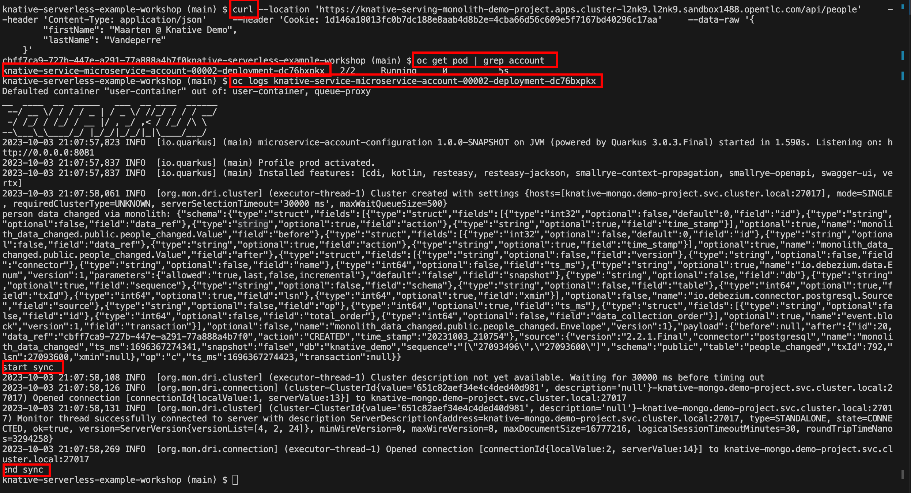
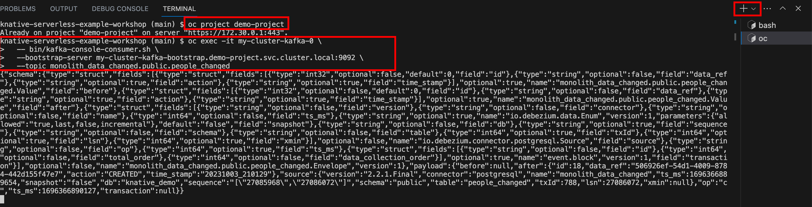
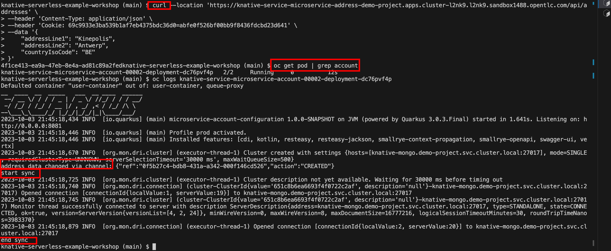
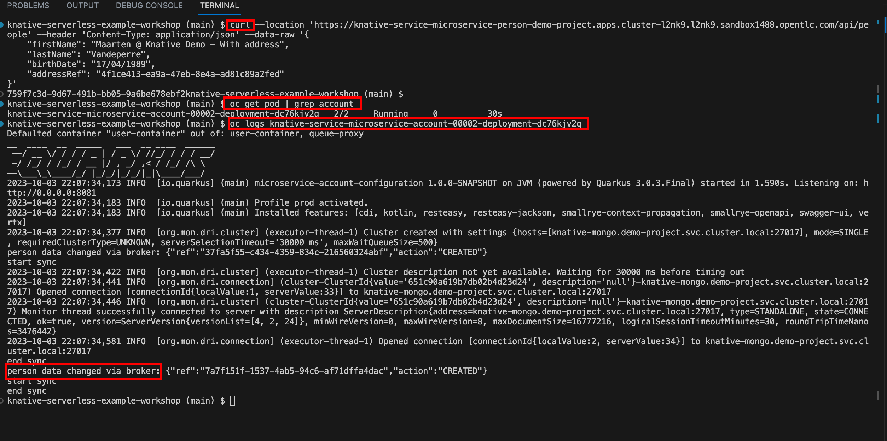

Decompose the monolith
source: https://github.com/maarten-vandeperre/knative-serverless-example-workshop/tree/main/tutorial
1. Outline
1.1. Initial setup: the monolith

1.2. Containerize the monolith




1.6. Kill the monolith

2. Step by step execution
!!! All following commands should be executed from within the dev spaces workspace in
the root of the project !!!
2.1. Create Postgres database
| oc new-app \
-e POSTGRES_USER=postgres \
-e POSTGRES_PASSWORD=postgres \
-e POSTGRES_DB=knative_demo \
-e PGDATA=/tmp/data/pgdata \
quay.io/appdev_playground/wal_postgres:0.0.2 \
--name postgres
|
And add initial data (!!! replace the pod name in the following example with the pod name of the Postgres pod. You can find it with the oc get pod command).
1
2
3
4
5
6
7
8
9
10
11
12
13
14
15 | execute them one by one!
oc exec -it postgres-7b5478878b-tr9hw -- mkdir /tmp/init-scripts
oc rsync ./db-init-scripts/postgres postgres-7b5478878b-tr9hw:/tmp/init-scripts
oc exec -it postgres-7b5478878b-tr9hw -- psql -U postgres -d knative_demo -a -f /tmp/init-scripts/postgres/001_setup_addresses_table.sql
oc exec -it postgres-7b5478878b-tr9hw -- psql -U postgres -d knative_demo -a -f /tmp/init-scripts/postgres/002_setup_person_table.sql
oc exec -it postgres-7b5478878b-tr9hw -- psql -U postgres -d knative_demo -a -f /tmp/init-scripts/postgres/003_add_outbox_tables.sql
or (execute them one by one!):
oc exec -it $(oc get pod -o custom-columns=POD:.metadata.name --no-headers | grep postgres) -- mkdir /tmp/init-scripts
oc rsync ./db-init-scripts/postgres $(oc get pod -o custom-columns=POD:.metadata.name --no-headers | grep postgres):/tmp/init-scripts
oc exec -it $(oc get pod -o custom-columns=POD:.metadata.name --no-headers | grep postgres) -- psql -U postgres -d knative_demo -a -f /tmp/init-scripts/postgres/001_setup_addresses_table.sql
oc exec -it $(oc get pod -o custom-columns=POD:.metadata.name --no-headers | grep postgres) -- psql -U postgres -d knative_demo -a -f /tmp/init-scripts/postgres/002_setup_person_table.sql
oc exec -it $(oc get pod -o custom-columns=POD:.metadata.name --no-headers | grep postgres) -- psql -U postgres -d knative_demo -a -f /tmp/init-scripts/postgres/003_add_outbox_tables.sql
|
2.2. Create MongoDB database
| oc new-app \
-e MONGO_INITDB_ROOT_USERNAME=mongo \
-e MONGO_INITDB_ROOT_PASSWORD=mongo \
mongo:4.2.24 \
--name knative-mongo
|
2.3. Deploy the monolith with basic deployment configuration
| sh tutorial/scripts/02_script.sh
|
2.4. Deploy the monolith with OpenShift Serverless - serving
| sh tutorial/scripts/03_script.sh
|
2.5. Deploy the account microservice with OpenShift Serverless - serving & Source to sink config
Within this step, we will extract the account logic (i.e., account microservice) from the monolith. Whenever changes are happening
on the monolith, Debezium will detect them and add them to a Kafka topic. There will be a source to sink configuration in place,
which will trigger an account microservice data sync when such a message is put on the topic.
| sh tutorial/scripts/04a_script.sh
sh tutorial/scripts/04b_script.sh
|
| oc exec -it my-cluster-kafka-0 \
-- bin/kafka-console-consumer.sh \
--bootstrap-server my-cluster-kafka-bootstrap.demo-project.svc.cluster.local:9092 \
--topic monolith_data_changed.public.people_changed
|
| curl --location 'https://knative-serving-monolith-demo-project.apps.cluster-l2nk9.l2nk9.sandbox1488.opentlc.com/api/people' \
--header 'Content-Type: application/json' \
--header 'Cookie: 1d146a18013fc0b7dc188e8aab4d8b2e=4cba66d56c609e5f7167bd40296c17aa' \
--data-raw '{
"firstName": "Maarten @ Knative Demo",
"lastName": "Vandeperre"
}'
|
oc get pod commands until you see
a pod for the account service up-and-running (as it is serverless, it will be up-and-running for limited
amount of time):

5. The consumer should receive a message, referring to the change.

2.6. Deploy the address microservice with OpenShift Serverless - serving & Channel config
Within this step, we will extract the address logic (i.e., address microservice) from the monolith.
Whenever changes are happening on this microservice, the account microservice will be synced via the
serverless channel-subscription topology. You can check the code: WithChannelUpdateAddressRepository
| sh tutorial/scripts/05_script.sh
|
| curl --location 'https://knative-service-microservice-address-demo-project.apps.cluster-l2nk9.l2nk9.sandbox1488.opentlc.com/api/addresses' \
--header 'Content-Type: application/json' \
--header 'Cookie: 69c9933e3ba539b1af7eb4375bdc36d0=abfe0f526bf00bb9f8436fdcbd23d641' \
--data '{
"addressLine1": "Kinepolis",
"addressLine2": "Antwerp",
"countryIsoCode": "BE"
}'
|
oc get pod commands until you see
a pod for the account service up-and-running (as it is serverless, it will be up-and-running for limited
amount of time):

2.7. Deploy the person microservice with OpenShift Serverless - serving & Trigger - broker config
Within this step, we will extract the person logic (i.e., person microservice) from the monolith.
Whenever changes are happening on this microservice, the account microservice will be synced via the
serverless trigger-broker topology. You can check the code: WithChannelUpdatePersonRepository
| sh tutorial/scripts/06_script.sh
|
| curl --location 'https://knative-service-microservice-person-demo-project.apps.cluster-l2nk9.l2nk9.sandbox1488.opentlc.com/api/people' \
--header 'Content-Type: application/json' \
--data-raw '{
"firstName": "Maarten @ Knative Demo - With address",
"lastName": "Vandeperre",
"birthDate": "17/04/1989",
"addressRef": "4f1ce413-ea9a-47eb-8e4a-ad81c89a2fed"
}'
|
oc get pod commands until you see
a pod for the account service up-and-running (as it is serverless, it will be up-and-running for limited
amount of time):

4. Now that we have a person entity linked to an address, we should be able to see the corresponding
account entity:
| curl https://knative-service-microservice-account-demo-project.apps.cluster-l2nk9.l2nk9.sandbox1488.opentlc.com/api/accounts | jq
|
2.8. Kill the monolith!!
Debug
| oc port-forward knative-mongo-c9b4cf7f-pg5fw 27017:27017
|
Showcase Debezium
| curl --location 'https://knative-serving-monolith-demo-project.apps.cluster-8f4q9.8f4q9.sandbox1055.opentlc.com/api/people' \
--header 'Content-Type: application/json' \
--data-raw '{
"firstName": "Maarten @ Monolith",
"lastName": "Vandeperre",
"birthDate": "17/04/1989",
"addressRef": "4f1ce413-ea9a-47eb-8e4a-ad81c89a2fed"
}'
|
Check Mongo: person not in the person microservice database, but it is in the account person database. Hence, the CDC-pipeline worked.